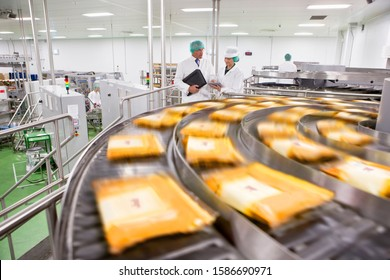

The Problem
Food loss: Food thrown out in the early stages of production (harvest, storage, and transportation)
Food waste: Food that is safe to be consumed by humans, but is instead thrown out by grocers or consumers
Nearly 1/3 of food produced globally each year goes to waste
The harsh reality is that by cutting the crust off that PB&J or tossing the banana with a brown spot you are contributing to the crises of world hunger, climate change, and the exhaustion of natural resources. Okay, while cutting the crust off one sandwich alone may not be the reason the polar ice caps are melting, Americans as a whole waste a whopping 40% of their food.
A large chunk of food loss or waste comes from overproduction, processing problems, unstable markets, and even weather. However, we too are accountable for wasting food because of label confusion, poor planning, and overbuying. All the while as many of us struggle to use all the food we buy, 12% of American households are food insecure.
Food Loss
On Farms

- Overproduction occurs in order to account for potential losses due to weather, pests, or disease
- Market conditions may disincentivize farmers from selling because cost of harvest is more than the potential profit
- Cosmetically-imperfect crops are often discarded because they are less desirable to consumers
- Labor shortages also can prevent farmers from harvesting all of their crops
- Errors made that question the safety of a foods consumption lead to waste
In Manufacturing Facilities/Packaging Plants
- Edible parts of food are often discarded in the production/manufacturing process
- Overproduction at the facility leads food loss as it is not economically sensible to produce products that would lead to fiscal losses
- Damages made throughout the production process also leads to food loss
- Mislabeled or aesthetically incorrect packaging on food leads to food loss
During Transport and Distribution
- Improper conditions along transportation routes leads to food spoiling
- Shipment rejections from buyers leads to massive amounts of food being discarded as new buyers cannot be found within the necessary timespan
Food Waste
In Retail Businesses
- 4-10% of food bought by restaurants is discarded before it even reaches consumers
- Oversized portions and failure to comply by consumer taste are major contributers to restaurant food loss
- 55% of edible leftovers are left at the restaurant
- Kitchen errors and over preperation of food are also significant contributers to food waste
- Legally, edible leftovers canot be donates due to health code restrictions
In Households
- Food Spoilage due to improper storage, lack of visibility in fridges, and partially needed ingrediants
- Over-preparations in households leading to cooking and serving more food than necessary that ends up being thrown out
- Date/Label confusion leads to premature discardation of perfectly edible food
- Overbuying due to sales and promotions that encourage impulse purchasing
- Poor planning of meals leads to purchasing unnessary/extra ingrediants that get disgarded